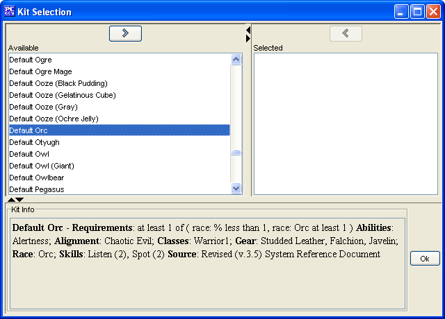
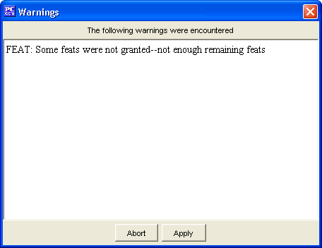

The Add Kit command opens up a new window containing a set of kits for the user to apply to his/her character. This is done mainly to help speed up character creation. Kits can be applied anytime to characters.
In the left hand pane is a list of kits which could be applied to the character. Kits in red indicate the character does not pass the prerequisites set in the kit.
In the 5.9.x line Default Monster Kits were added, if you create a new character and choose the Add Kit menu item before you select a race the kit list will display all possible Default Monster Kits. If you have already selected a race Only those Default Monster Kits for which that race qualifies for will be displayed.

You can click on a kit in the left hand pane to bring up information on that kit.
You can double click on an item (or select and click the > button) in the left hand pane to apply it to your character. A Warnings dialog box will pop up telling you which parts of the kit are not able to be applied (usually because you do not have enough free slots of feats, or skill points etc) and then gives you the option to apply or abort the kit

When you have applied the kit it will appear in the right hand pane.